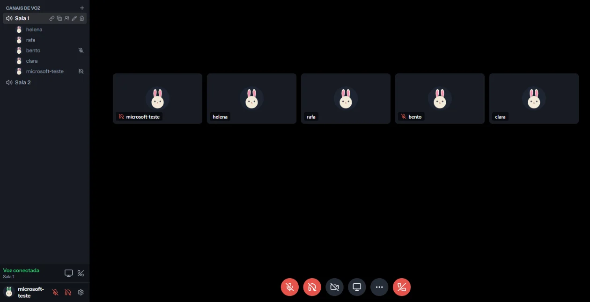
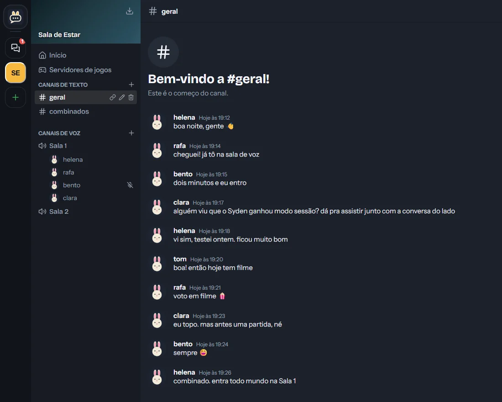
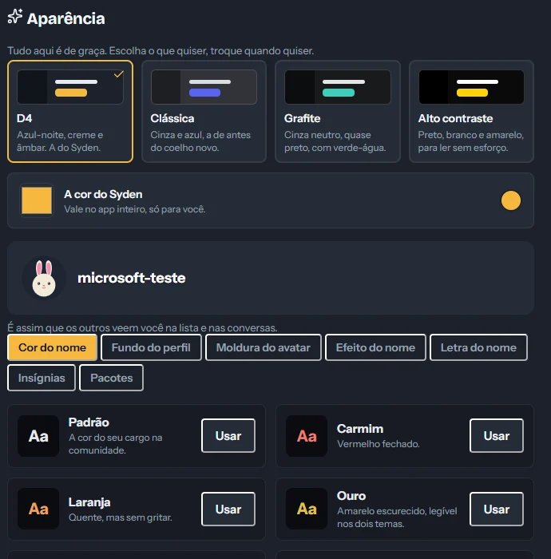

O cantinho da sua turma na internet
Voz, vídeo, tela compartilhada e conversa por texto, num lugar que é de vocês. De graça por inteiro: sem versão paga, sem recurso trancado, sem anúncio.
Funciona no navegador sem instalar nada. O programa para Windows serve para atalhos de teclado e para o som do computador na tela compartilhada.


- De graça, inteiro
- Sem anúncios
- Não vende os seus dados
- Em 72 idiomas
Salas de voz
A sala fica aberta. É só entrar.
Ninguém precisa ligar para ninguém: você vê quem está na sala e entra quando quiser. A supressão de ruído abafa o ventilador e o barulho da casa, e a qualidade se ajusta à internet de cada um — quem tem conexão ruim não atrapalha a chamada dos outros.
- Tela compartilhada com o som do jogo ou do vídeo, no programa para Windows
- Modo sessão: o vídeo grande no meio e a conversa do lado, para assistir junto
- Clipe dos últimos 30 segundos, para guardar a jogada que ninguém vai acreditar

Comunidades
Um lugar com a cara de quem está nele
Cada comunidade tem os seus canais de texto e de voz, e os seus próprios emojis e sons, feitos por quem participa. Dá para responder, abrir tópico, fazer enquete e mandar arquivo.
- Destaques: a mensagem que junta estrelas vai para o canal de destaques
- Sorteios e aniversários, anunciados pelo próprio Syden
- Entrada por convite: quem está dentro é quem vocês chamaram

Guarda-roupa
Enfeites que ninguém compra
Cor, efeito e letra do nome, fundo de perfil, moldura do avatar e insígnias — tudo de graça. Alguns são conquistados usando o Syden; nenhum é vendido, e nenhum dá vantagem sobre ninguém.
O app também troca de cara: azul-noite com âmbar, a paleta clássica, grafite ou alto contraste, para ler sem esforço.

E mais um monte de coisa
Karaokê que não atrasa
A música não passa pela chamada: cada computador toca a própria cópia, e a letra acende no tempo certo na tela de todo mundo. As músicas são de quem participa.
Link da aula
Um endereço que leva direto à sala de voz. Quem não tem conta entra só com o nome, e o link vence no prazo que você escolher.
Amigos e conversa reservada
Amizade e conversa particular fora das comunidades. E dá para bloquear alguém: quem foi bloqueado não descobre, e some dos dois lados.
Selo da comunidade
Comunidades ganham selos por marcos que ninguém alcança sozinho. É conquistado, nunca comprado.
Servidores de jogo
A comunidade guarda os endereços dos servidores em que vocês jogam, para ninguém ter de perguntar de novo.
Sons na hora certa
Painel de sons para tocar na chamada. Quem não quer ouvir desliga, e ninguém é obrigado a escutar o que o outro toca.
O Syden fala a sua língua
São 72 idiomas, e o app já abre no idioma que o seu navegador usa. Você troca quando quiser, e a escolha fica guardada. Este site, por enquanto, está só em português.
O que ainda não está pronto
O Syden está em uso de verdade, mas é novo. Preferimos dizer isto aqui do que deixar você descobrir sozinho.
Comunidades só por convite
Você entra numa comunidade pelo código de quem já está nela. Ainda não existe uma lista pública para descobrir gente nova.
Um servidor, pequeno
O Syden roda num único servidor pago do bolso. Funciona bem para grupos de amigos; não é feito hoje para multidão.
O Syden é gratuito e vai continuar sendo. Quem quiser ajudar a pagar o servidor pode contribuir — e isso não desbloqueia nada, porque não há nada trancado.
Chama a turma
Crie a comunidade, mande o código para os amigos e entre na sala.